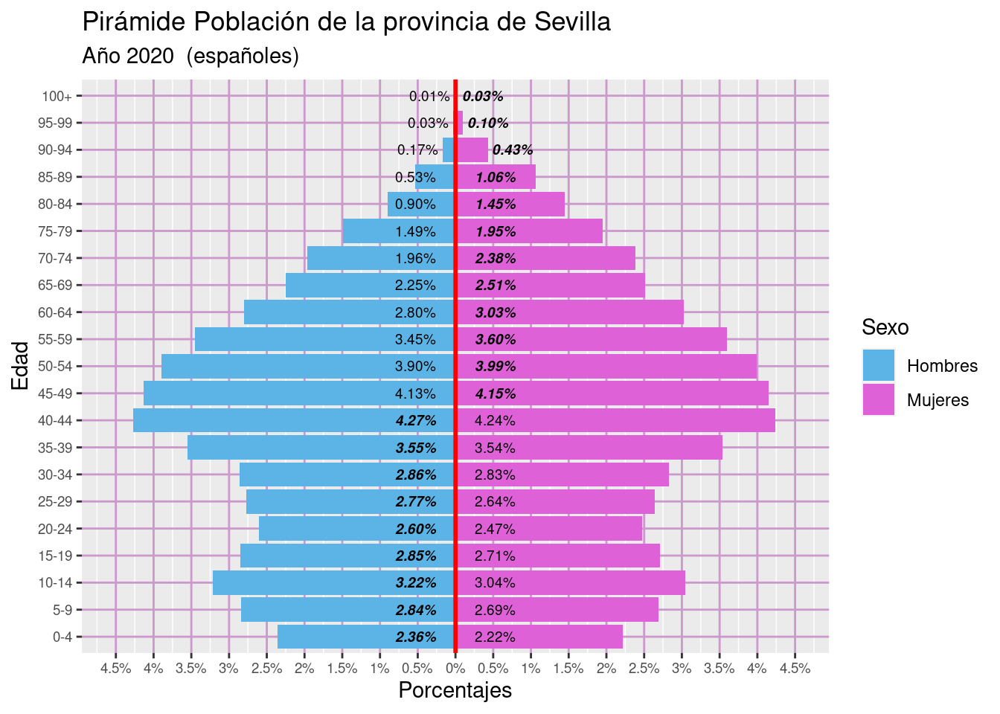
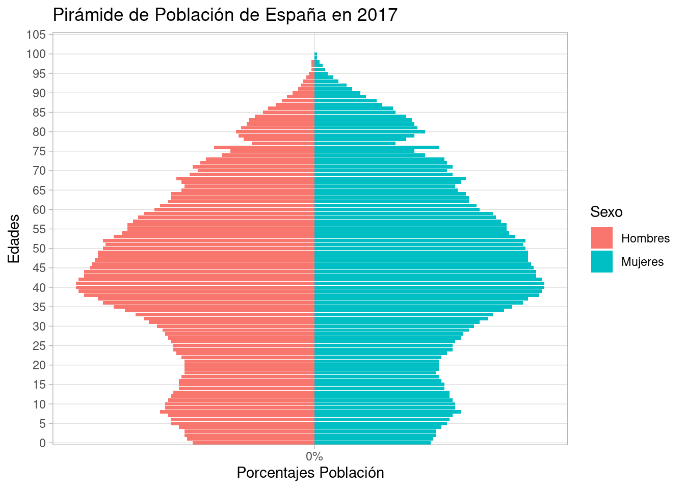
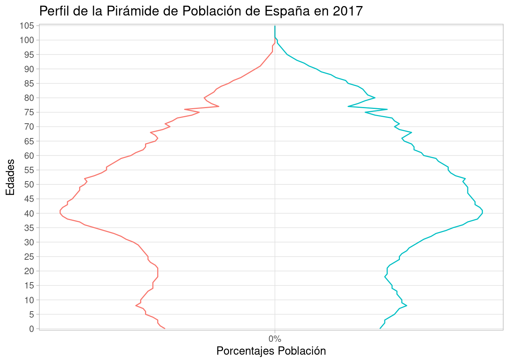
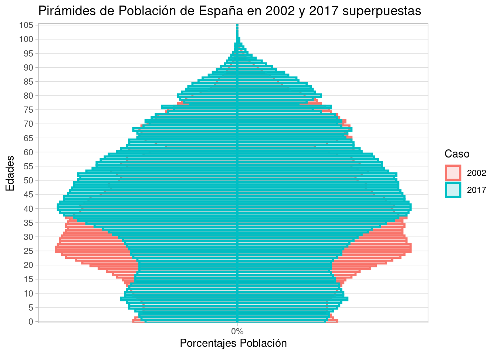

suppressWarnings(suppressMessages(library(DemographyBasic)))Práctica 4: Parte 3 (Pirámides de Población)
1 Crear pirámides de población
Para facilitar la elaboración de pirámides de población se han definido una serie de funciones, las cuales se encuentran definidas en el fichero “funciones_piramides.R”. Las funciones son las siguientes:
DemBas_piramide_ggplot2()DemBas_piramide_ggplot2_linea()DemBas_piramides_enfrentadas_ggplot2()DemBas_piramide_superpuestas_ggplot2()DemBas_piramide_compuestasCateg_ggplot2()DemBas_piramidePorc()
Además existen dos funciones auxiliares en el paquete:
DemBas_agrupar_variable()DemBas_etiquetas_gruposEdad()
La sintaxis de estas funciones es la siguiente:
DemBas_piramide_ggplot2 = function(datosPiramide,
porcentajes=TRUE,
etiquetas=FALSE,etiquetas.size=4,
UsaCaso=FALSE,
etiq.hombre="Hombre",etiq.mujer="Mujer",
colorear="Sexo",colores=NULL)DemBas_piramide_ggplot2_linea = function(datosPiramide,
porcentajes=TRUE,
etiquetas=FALSE,etiquetas.size=4,
UsaCaso=FALSE,
etiq.hombre="Hombre",etiq.mujer="Mujer",
colorear="Sexo",colores=NULL)DemBas_piramides_enfrentadas_ggplot2 = function(datosPiramide,
porcentajes=TRUE,
etiquetas=FALSE,etiquetas.size=4,
UsaCaso=TRUE,
etiq.hombre="Hombre",etiq.mujer="Mujer",
colorear="Sexo",colores=NULL,
nfilas=NULL,ncols=NULL)DemBas_piramide_superpuestas_ggplot2 = function(datosPiramide,
porcentajes=TRUE,
etiquetas=FALSE,etiquetas.size=4,
colores = NULL,
transparente=FALSE,
alfa=0.1,bar.size=1,
etiq.hombre="Hombre",etiq.mujer="Mujer")DemBas_piramide_compuestasCateg_ggplot2 = function(datosPiramide,
porcentajes=TRUE,
etiquetas=FALSE,etiquetas.size=4,
colores = NULL,ordeninverso=FALSE,
alfa=1,bar.size=1,
etiq.hombre="Hombre",etiq.mujer="Mujer")DemBas_piramidePorc = function(datosPiramide,
Gtitulo = "Pirámide Población de la provincia de Sevilla",
Gsubtitulo = "Año 2020",
Gtitulo.X = "Porcentajes",
GHombresEtiq="Hombres",
GMujeresEtiq="Mujeres",
Gedadfinal = 100,
Gext_izq = -4.5,
Gext_der = 4.5,
Glimite = 0.5,
Gsizeletra = 3.5,
GSegmentos = TRUE)Nota: estas funciones construyen gráficos usando el paquete “ggplot2”, por lo que es posible “sumarle” alguna característica adicional disponible en este paquete R.
Los datos deben de ir en un data.frame o tibble, y deben contener las siguientes columnas:
- Edad: pueden ser edades simples o grupos de edad (character o factor).
- Sexo: por defecto espera que en esta columna se usen las etiquetas: “Hombre” y “Mujer” (character o factor).
- Poblacion: número de habitantes (numeric).
- Caso: variable categórica para pirámides “compuestasCateg” (character o factor).
A continuación veremos cómo usarlas mediante ejemplos. En primer lugar tendríamos que cargar el fichero de funciones.
2 Ejemplo: Pirámide de población agrupada en intervalos de edad
Se representará la pirámide de población agrupada en intervalos de edad para Sevilla en 2020 pero considerando solamente la población de españoles.
Cargamos los datos y los preparamos para usarlos con las funciones de creación de pirámides:
load(file = "04003px.RData")
ano_selec = 2020
Espanoles_Extranjeros = "Españoles"
CCAA_Prov = "Sevilla"
datosPiramide = datos |>
dplyr::filter(Ano == ano_selec &
Sexo %in% c("Mujeres", "Hombres") &
Edad != "TOTAL" &
CCAA.Prov == CCAA_Prov &
Espanoles.Extranjeros == Espanoles_Extranjeros) |>
dplyr::rename(Poblacion = value) |>
dplyr::select(Edad, Sexo, Poblacion)
#save(datosPiramide, file = "datosPiramide_Sevilla2020.RData")
#load("datosPiramide_Sevilla2020.RData", verbose = T)Las primeras filas de los datos utilizados son:
head(datosPiramide)Representamos la pirámide de población de la provincia de Sevilla considerando solamente los españoles.
(g_pir1 = DemBas_piramidePorc(datosPiramide,
Gtitulo = "Pirámide Población de la provincia de Sevilla",
Gsubtitulo = "Año 2020 (españoles)",
GSegmentos = FALSE))
Grabamos la pirámide de población en un fichero “png” para poder reutilizarlo en cualquier otro documento.
ggsave("ggsave_pirSevilla2020.png",g_pir1, scale = 1.5)Saving 10.5 x 7.5 in image3 Ejemplo: Pirámide de Población de edades simples
En este primer ejemplo, vamos a construir una pirámide de población de España en 2017. Para ello vamos a usar la función DemBas_piramide_ggplot2().
Recurriendo a la web del INE, obtener la siguiente información en formato “px”:
- Población de España residente por fecha, sexo y edad a 1 de enero de 2002 y 2017.
Paso 1. Descargamos el fichero “px” de la página: http://www.ine.es/jaxiT3/Tabla.htm?t=9663&L=0 (INEBASE, Demografía y Población, Cifras de Población, Resultados nacionales)
Paso 2. Importamos los datos en R:
dfej02a <- DemBas_read_px2("9663.px")
head(dfej02a)A continuación se muestra el código tidyverse que nos permitirá obtener los datos que necesitamos: “población española en 2017 por edades simples”.
tp1 = dfej02a %>%
dplyr::filter(Periodo=="1 de enero de 2017",Edad.simple=="Total") %>%
# hay dos espacios entre "de" y "2017"
dplyr::select("Sexo","value")
PV = round(tp1$value[tp1$Sexo=="Hombres"]/tp1$value[tp1$Sexo=="Ambos sexos"],
4)*100
#### España a 1 de enero de 2017.
x1 = as.character(DemBas_extrae_codigo_provincia(dfej02a$Edad.simple))
x1n = as.numeric(x1)
x1ngr = DemBas_agrupar_variable(x1n,metodo=2,final=100)
dfej02a$EdadGrupos = x1ngr
tp3 = dfej02a %>%
dplyr::filter( Periodo=="1 de enero de 2017",
!(Edad.simple %in% c("100 y más años","Total"))) %>%
dplyr::group_by(Sexo,EdadGrupos) %>%
dplyr::summarise(Poblacion = round(sum(value,na.rm=T),0), .groups = "keep")
dfPir2017 = dfej02a %>%
dplyr::filter( Periodo=="1 de enero de 2017",
!(Sexo=="Ambos sexos"),
!(Edad.simple %in% c("100 y más años","Total"))) %>%
dplyr::select(Edadchar=Edad.simple,
Sexo,
Poblacion = value)
dfPir2017$Edad = DemBas_extrae_codigo_provincia(dfPir2017$Edadchar)
dfPir2017$Edad = factor(dfPir2017$Edad,levels =unique(dfPir2017$Edad))
dfPir2017$Poblacion[is.na(dfPir2017$Poblacion)] = 0
save(dfej02a, file = "dfej02a.RData")Se han realizado las operaciones necesarias para que el data.frame tenga al menos las 3 columnas necesarias (“Edad”, “Sexo”, “Población”), como puede verse a continuación:
head(dfPir2017)Construimos la pirámide de población llamando a la función básica:
DemBas_piramide_ggplot2(dfPir2017,
#etiquetas = T,etiquetas.size = 2,
etiq.hombre = "Hombres",etiq.mujer = "Mujeres") +
labs(title = "Pirámide de Población de España en 2017") +
scale_x_discrete(
# si la variable edad fuera numeric debería usarse scale_x_continuous
breaks = seq(0,105,by=5),
labels = paste0(as.character(seq(0,105,by=5)), "")) 
Por defecto, representa la pirámide de poblaciones utilizando los porcentajes. Si se quisiera mostrar los valores absolutos tendríamos que añadir el argumento: porcentajes=FALSE. Se puede personalizar los colores usados (colores=c("green","blue")), y también qué variable se usa para colorear, por defecto se usa la variable “Sexo” (colorear="Edad"). Se podrían mostrar los valores sobre cada barra activando el argumento etiquetas=TRUE.
3.1 Perfil de la pirámide de población
También podríamos representar solamente el perfil de la pirámide de población con ayuda de la función func_piramide_ggplot2_linea():
DemBas_piramide_ggplot2_linea(dfPir2017,colorear = "Sexo",
etiq.hombre = "Hombres",etiq.mujer = "Mujeres") +
labs(title = "Perfil de la Pirámide de Población de España en 2017") +
scale_x_discrete(
# si la variable edad fuera numeric debería usarse scale_x_continuous
breaks = seq(0,105,by=5),
labels = paste0(as.character(seq(0,105,by=5)), "")) +
guides(colour="none")
4 Ejemplo: pirámide superpuesta
En este otro ejemplo, vamos a comparar las dos piramides de población anteriores utilizando una pirámide superpuesta, en la que se muestre simultáneamente las pirámides de 2002 y 2017.
En primer lugar, preparamos los datos para que se representen correctamente. La columna “Caso” debe contener la información de a qué población se refiere.
dfPir2002 = dfej02a %>%
dplyr::filter( Periodo=="1 de enero de 2002",
!(Sexo=="Ambos sexos"),
!(Edad.simple %in% c("100 y más años","Total"))) %>%
dplyr::select(Edadchar=Edad.simple,
Sexo,
Poblacion = value)
dfPir2002$Edad = DemBas_extrae_codigo_provincia(dfPir2002$Edadchar)
dfPir2002$Edad = factor(dfPir2002$Edad,levels =unique(dfPir2002$Edad))
dfPir2002$Poblacion[is.na(dfPir2002$Poblacion)] = 0dfPir2002y2017 = rbind(dfPir2002,dfPir2017)
dfPir2002y2017$Caso = c(rep(2002,nrow(dfPir2002)),rep(2017,nrow(dfPir2017)))
head(dfPir2002y2017)Para representar la pirámide de población superpuesta usaremos la función func_piramide_superpuestas_ggplot2():
DemBas_piramide_superpuestas_ggplot2(dfPir2002y2017,
etiq.hombre = "Hombres",etiq.mujer = "Mujeres",
transparente = T) +
labs(title = "Pirámides de Población de España en 2002 y 2017 superpuestas") +
scale_x_discrete(
breaks = seq(0,105,by=5),
labels = paste0(as.character(seq(0,105,by=5)), "")) 
5 Anexos de código R
5.1 Obtener población con edades agrupadas en intervalos de edad
A continuación se muestra un procedimiento para obtener la población agrupada en intervalos de edad y también el cálculo del índice de envejecimiento:
# Procedimiento: Convertir edad simple en edad agrupada en intervalos de edad
x1 = as.character(DemBas_extrae_codigo_provincia(dfej02a$Edad.simple))
x1n = as.numeric(x1)
x1ngr = DemBas_agrupar_variable(x1n,metodo=2,final=100) # función específica
dfej02a$EdadGrupos = x1ngr
tp3 = dfej02a %>%
dplyr::filter( Periodo=="1 de enero de 2017",
!(Edad.simple %in% c("100 y más años","Total"))) %>%
dplyr::group_by(Sexo,EdadGrupos) %>%
dplyr::summarise(Poblacion = round(sum(value,na.rm=T),0), .groups = "keep")
#head(tp3)
# tp3 = dfej02a %>%
# dplyr::filter( Periodo=="1 de enero de 2017",
# !(Edad.simple %in% c("100 y más años","Total"))) %>%
# dplyr::summarise(Poblacion = round(sum(value,na.rm=T),0),
# .by = c(Sexo,EdadGrupos)) %>%
# dplyr::arrange(Sexo,EdadGrupos) # ,.groups = "keep"
tp3b = tidyr::pivot_wider(tp3,
names_from = "Sexo",
values_from = "Poblacion")
head(tp3b, 10)5.2 Obtener el índice de envejecimiento
A continuación se muestra un procedimiento para obtener el índice de envejecimiento:
# Cálculo del Índice de Envejecimiento
tp2 = dfej02a %>%
dplyr::filter(Periodo=="1 de enero de 2017",Sexo=="Ambos sexos",
!(Edad.simple %in% c("100 y más años"))
) %>%
dplyr::select(Edad.simple,value)
tp2$Edad.simple2 = as.numeric(as.character(
DemBas_extrae_codigo_provincia(tp2$Edad.simple)))
IndEnv = round(
sum(
tp2$value[(tp2$Edad.simple2>=65) & (tp2$Edad.simple!="100 y más años")],
na.rm = T)/
sum(tp2$value[tp2$Edad.simple2<=15],na.rm=T)
,4)*100
IndEnv[1] 118.26